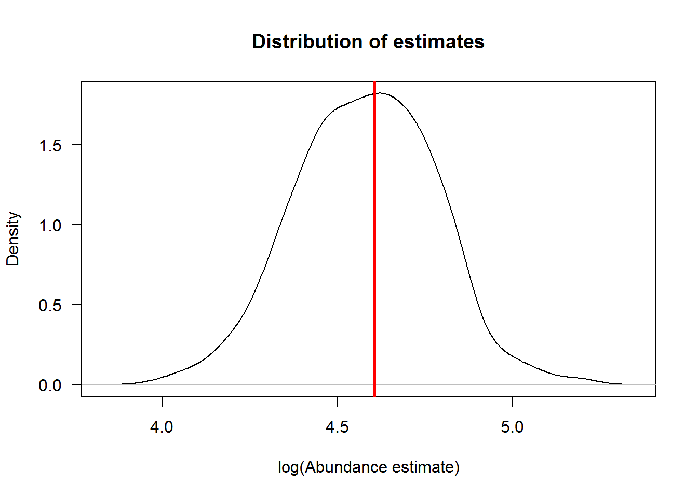
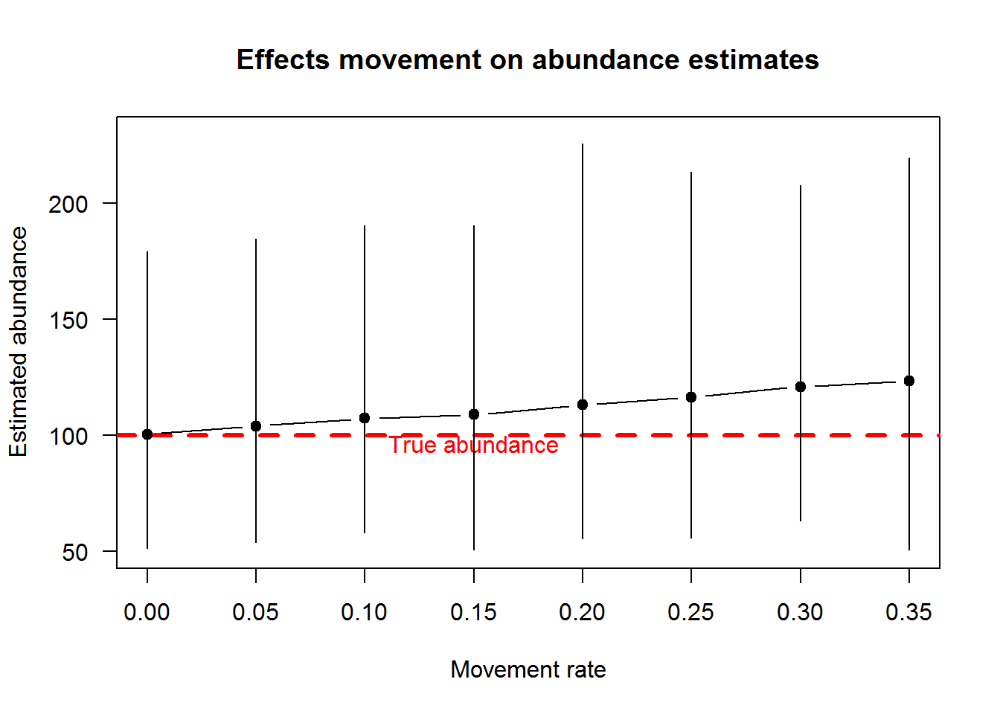

Here are the highlights for those that do not want to read the post in its entirety.
Want to engage in the process? Please let us know what you think in the comments or email mike.colvin [at] msstate.edu. Specifically, we are interested in your thoughts about small time scale Pallid Sturgeon movements (day to day, week to week).
In thinking about the bend level as the sampling unit for potential PSPAP monitoring designs. Recall that maintaining compatibility with legacy data was one of the fundamental objectives. One potential design that meets that objective is to continue to use bends as the sampling unit. If those bends are revisited them over the course of a couple of days, an abundance estimate can be generated using capture-mark-recapture (CMR) estimators. However to estimate the abundance at the bend level we need to assume closure for CMR estimates, which might be violated as fish move around from day to day.
We simulated a virtual population and capture process to evaluate the potential effects of Pallid Sturgeon movement using a closed population CMR estimator, the M0 model (Otis et al. 1978). The M0 model, relative to other CMR closed population estimators is one of the simplest CMR estimators, and it assumes that capture probability is the same among all capture occasions.
There needs to be 2 or more capture occasions for this estimator to work. Suppose for this evaluation we use 3 occasions and that a sampling crew is using trotlines set overnight. So this effort would consist of a crew setting trotlines, checking gear after 24 hours and marking fish (occasion 1), resetting the lines, returning after 24 hours to check gear and mark fish (occasion 2) and this process continues until 3 occasions are reached. With a capture probability of 0.3 and no fish moving out or into the bend during the 3 days it takes to achieve the 3 capture occasions.
| Capture history | Relative frequency | Expected frequency |
|---|---|---|
| 000 | 0.512 | 51.2 |
| 100 | 0.128 | 12.8 |
| 010 | 0.128 | 12.8 |
| 110 | 0.032 | 3.2 |
| 001 | 0.128 | 12.8 |
| 101 | 0.032 | 3.2 |
| 011 | 0.032 | 3.2 |
| 111 | 0.008 | 0.8 |
Given the capture probability (\(p=0.2\)), 3 capture occasions, and that there are 100 Pallid Sturgeon on the bend we would expect not to capture 51 fish (i.e., capture history = 000). If we are lucky we may capture 1 fish all 3 times, the probability of this outcome is 0.008 from the table above and is calculated as the (\(0.008=0.2^3=p^3\)).
The expected captures make several assumptions about population closure. Specifically, the fish contained in the study area:
We also assume:
In real life, the outcome of sampling a bend over 3 occasions, would look like the table below if the assumptions hold.
| Capture history | Number captured |
|---|---|
| 100 | 11 |
| 010 | 12 |
| 110 | 4 |
| 001 | 8 |
| 101 | 4 |
| 011 | 4 |
The abundance estimated from the M0 model given those capture frequencies was 75.4341967 and the 95% confidence interval of 54.9-121.3. Not too bad, the estimate was a bit lower than 100, but estimates are expected to b be above and below the true value. Let’s demonstrate this by running the same simulation as above but with many replicate datasets, 1000 for this simulation.

The plot above illustrates the distribution of estimates and the red vertical line denotes the true abundance. We need to look at this plot on log scale because estimates are lognormally distributed. Ok, we have confidence that the estimator works. Now we can build on this approach to evaluate what happens if Pallid Sturgeon are moving in and out of a bend, thereby violating the closure assumption.
We can specify random movement as the immigration rate being equal to the emigration rate. Emigration works by moving fish out of the bend, but we need a population of fish to immigrate into the population. For example, if the emigration rate was 0.1 we would expect 10 of the 100 Pallid Sturgeon in the bend to leave. There also needs to be Pallid Sturgeon to move into the bend. In this simulation, there are 75 Pallid Sturgeon that can potentially immigrate into the bend. Given an emigration rate of 0.1, we can expect 7.5 Pallid Sturgeon to move into the bend. Let’s set the daily emigration and immigration rate from 0 to 0.35 in increments of 0.05 and allow random movement in and out of the bend each day.
The figure below illustrates the effect of movement of fish in and out of the bend between occasions on abundance estimates. Specifically, we see that with no migration, abundance estimates were unbiased. Abundance estimates increase with increasing movement of fish in and out of the bend.

The overestimate of abundance is because the capture probability is underestimated. Why is that? Well, consider instances where a marked fish moved out of the bend and was not available for recapture or an unmarked fish moves into the bend after occasion 1. The estimator assumes these fish were in the bend for every sampling occasion and vulnerable to capture. Since that is not the case, but the model assumes it is, the capture probability estimates end up being negatively biased.
Coming up we will look at how the Robust Design fares to violating this assumption and other related design questions. Stay tuned.
Otis, D. L., K. P. Burnham, G. C. White, and D. R. Anderson. 1978. Statistical-inference from capture data on closed animal populations. Wildlife Monographs:7–135.